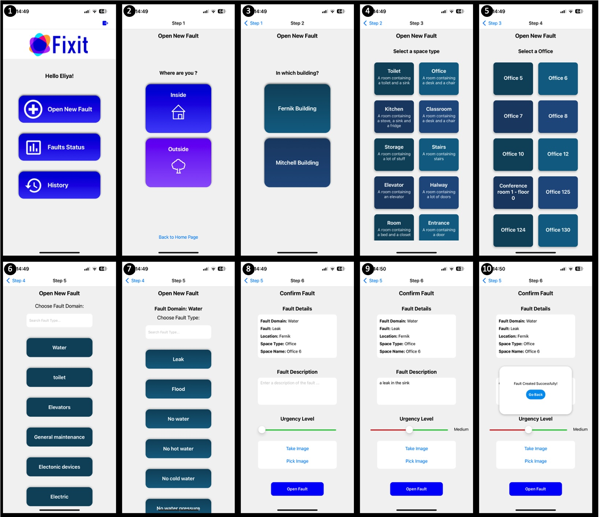
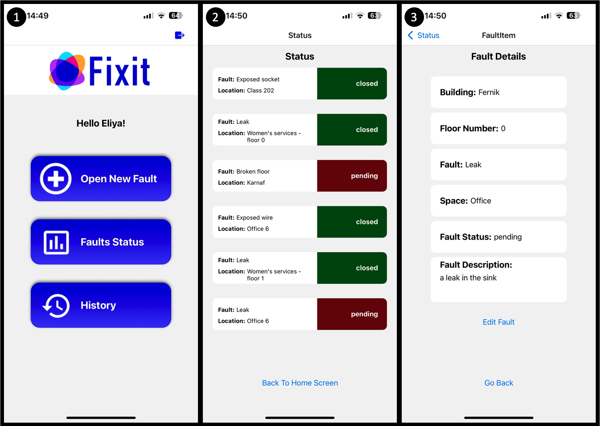

Description
A fault tracking and management system designed to streamline fault reporting for end-users, while ensuring maintenance personnel receive categorized fault reports based on location and urgency.
Technologies Used
- Node.js
- Express.js
- MongoDB
- React Native
- CSS
Problem & Target Audience
Large-scale facilities face challenges in effectively tracking, managing, and repairing faults, leading to delays in addressing issues reported by frontline personnel and inefficiencies in maintenance team prioritization and resolution.
Goals
Efficient Fault Reporting and Tracking
- Simplify fault reporting for frontline personnel - immediate and accurate.
- Enable maintenance teams to efficiently prioritize and address faults - based on location and urgency.
Project Screenshots
Add Fault
Fault Tracking
Maintenance Flow

Project Book
You can view my Fixit project book: View Project Book
Project Link
You can view my Fixit project on GitHub: